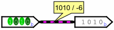

布局选项卡

此选项卡包括影响电路布局编辑器行为的首选项。
-
使用抗锯齿： 激活显卡的抗锯齿效果。 曲目在屏幕或打印上将显得更加平滑。
- 使用色盲配色方案 线程颜色将发生变化，以适应色觉困难的人。
-
显示属性光环： 指定是否在属性当前显示在属性表中的组件或工具周围绘制浅青色椭圆形。

- 使用动画图标
-
显示组件提示： 指定是否显示当鼠标悬停在支持它们的组件上时临时出现的“工具提示”。 例如，如果将鼠标悬停在子电路组件的引脚上，它将显示子电路内相应引脚的标签。 将鼠标悬停在分离器的一端会告诉您该端对应的位。 此外，Plexers、Arithmetic 和 Memory 库中的所有组件都将通过提示提供有关其输入和输出的信息。
-
移动时保持连接： 指示 Logisim 是否应在移动组件以保留其连接时添加新电线。 默认情况下，此功能处于打开状态 - 尽管可以通过在移动组件时按 shift 键来暂时关闭它。 如果未选中此框，则默认情况下不会在移动过程中添加连线 - 尽管您可以在移动过程中按 shift 键暂时打开它。
-
添加时显示重影： 选中后，当选择添加新组件的工具时，当鼠标在画布上移动时，会绘制要添加的组件的浅灰色轮廓。 例如，如果选择“与”门工具并将鼠标移动到窗口中（不按鼠标按钮），则单击鼠标时“与”门将出现的位置将显示“与”门的灰色轮廓。
- 使用固定尺寸的电路盒： 新的 logisim-evolution 项目中子电路的默认外观将采用标准尺寸，如果不根据电路进行调整。 也可以根据子电路的特性根据具体情况来完成此操作。 使用固定盒子大小
-
使用新的输入和输出符号：
将使用新的输入和输出符号
if 该框被选中，否则将使用 Logisim-Classique 输入和输出符号

 。 弹出窗口会询问您是否应该将它们转换为当前电路图。
。 弹出窗口会询问您是否应该将它们转换为当前电路图。
- 使用以下提供的默认外观： 某些电路的外观，例如存储器，将根据logisism的版本提出：Logisim-Classique、Logisim-HolyCross、Logisim-Evolution
-
添加组件后： 默认情况下，添加每个单独的组件后，Logisim 会切换回编辑工具，以允许您移动组件并添加连线。 下拉框允许您更改此行为，以便 Logisim 保持使用相同的工具来添加更多相同的组件，直到您自己选择选择编辑工具。 （这是 Logisim 2.3.0 之前的 Logisim 的默认行为。虽然更直观，但此行为需要更多的鼠标移动才能在工具之间切换。）
-
戳线时的第一个基数： 配置使用戳工具单击线时如何显示值。 单击电线会暂时显示该值，直到用户单击电路中的其他位置为止。

-
线戳时的第二个基数： 配置线值显示方式的第二部分。